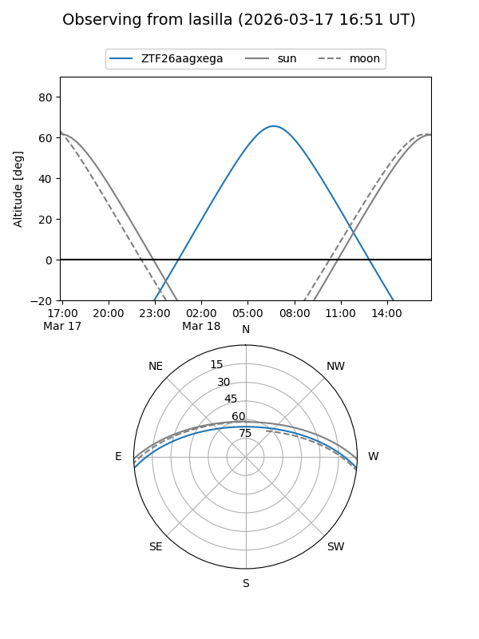
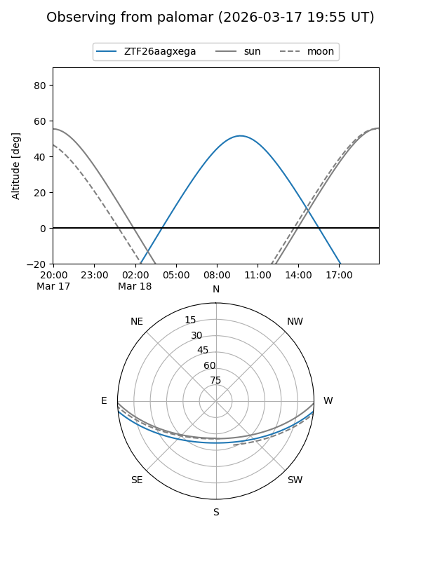

ZTF26aagxega
Target ZTF26aagxega at 2026-03-18 12:48
Aliases and brokers:
FINK: link
Lasair: link
ALeRCE: link
alt names
ZTF26aagxega (ztf,fink_ztf)
Coordinates:
equatorial (ra, dec) = 204.9424,-4.86606
equatorial (HMS+DMS) = 13:39:46.16,-04:51:57.83
galactic (l, b) = (324.7964,+55.94033)
Flags:
Photometry:
last ztfg=17.53
1 ztfg detections
Lightcurve
Visibility


Additional plots